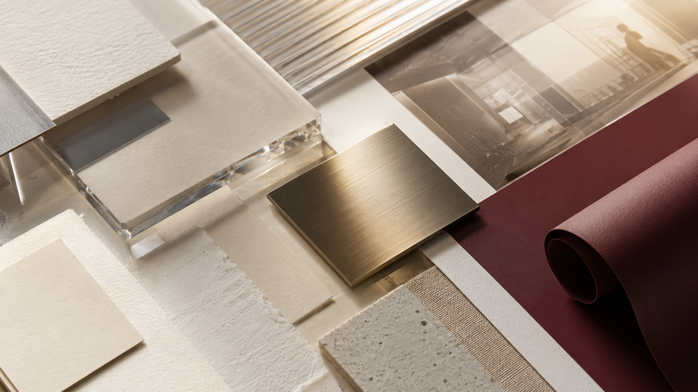
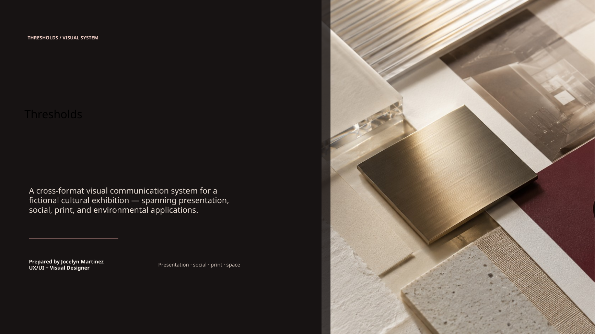
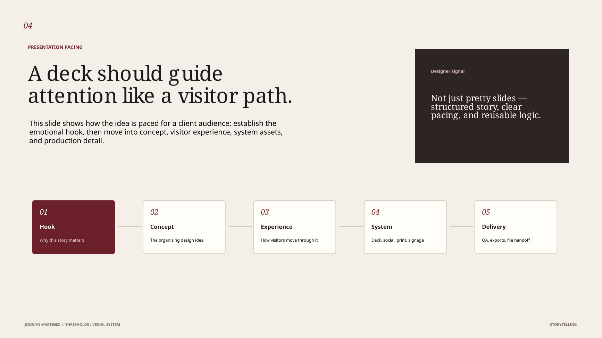
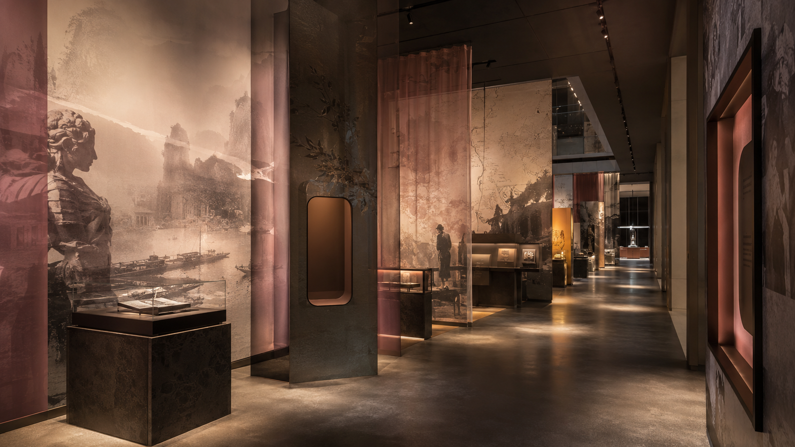

Presentation storytelling
A structured 11-slide narrative with reusable layouts, visual pacing, and clear audience-facing hierarchy.
Self-directed concept · Visual communication & presentation design
An exhibition identity designed to move consistently from narrative deck to social campaign, printed collateral, and the physical environment.
This is an independent portfolio exercise—not a commissioned client project or documentation of a built installation. Spatial imagery is conceptual and is used to demonstrate art direction and system application.


One idea, many formats
Cultural and experiential projects rarely live in one format. The same idea may need to persuade collaborators in a presentation, attract visitors on social media, support submissions and print materials, and orient people once they enter the space.
Thresholds explores how a compact identity can preserve hierarchy, atmosphere, and recognizability across those touchpoints. Rather than designing isolated artifacts, I created shared rules for typography, spacing, image crops, color, caption zones, and production checks.
A structured 11-slide narrative with reusable layouts, visual pacing, and clear audience-facing hierarchy.
A consistent campaign language for LinkedIn, Instagram, event graphics, print collateral, and spatial applications.
File organization, naming, templates, proofing, export checks, and handoff logic designed into the system.
Scope: The deck and case study demonstrate design direction and production thinking. No physical installation was produced. Print dimensions, material choices, motion, accessibility, and environmental placement would require prototyping and technical review before fabrication.
Fictional exhibition premise
Thresholds imagines an exhibition about ordinary objects, personal memory, and the traces people leave behind. The communication system needed to feel quiet and evocative while remaining clear enough for client review, campaign production, print delivery, and wayfinding.
Build emotional clarity without visual clutter.
Quiet drama, repeatable rules
The system uses architectural openings, cropped fragments, translucent overlays, and warm directional light as recurring visual ideas. The design avoids decorative complexity by limiting the number of type roles, colors, and image treatments.
Editorial serif typography carries titles, emotional transitions, and exhibition statements.
A neutral sans serif supports labels, captions, tables, diagrams, specifications, and small-format reading.
Large statements establish emotional pacing; smaller labels carry practical information without competing.
Consistent edge alignment, focal placement, and caption zones allow imagery to adapt across formats.
The system repeats spacing, contrast, and proportions—not the exact same layout on every artifact.
Narrative deck design
The 11-slide presentation progresses from emotional premise to concept, visitor experience, visual system, templates, campaign applications, production detail, and reflection. Each section introduces only the amount of information the audience needs at that moment.

The sequence is designed to move from emotional hook to practical confidence. The deck does not open with specifications; it earns attention first, then introduces system logic and production detail.
Used for emotional transitions, opening moments, and spatial direction where one idea should dominate.
Supports comparisons, rationale, creative choices, and client discussion without dense paragraphs.
Organizes production requirements, deliverables, social variations, and quality-control information.
Animation with a job to do
Motion is treated as part of presentation hierarchy. The intended PowerPoint and Keynote builds reveal information in the order it should be discussed, helping the presenter control pacing without distracting from the content.
This browser prototype demonstrates the intended build logic. In a production deck, the same sequence would be recreated with native PowerPoint or Keynote animation so every element remains editable.
From page to environment
Print and spatial applications use the same hierarchy at different scales. Small collateral emphasizes reading order and production accuracy; environmental graphics prioritize orientation, contrast, viewing distance, and the relationship between information and architecture.

A compact project summary with bleed-safe composition, clear hierarchy, caption logic, and export checks.
A spatial direction using scale, light, contrast, and repeated threshold forms to organize the visitor experience.
Plan 0.125-inch bleed for standard print pieces and confirm vendor requirements before final export.
Use appropriately licensed source imagery and verify effective resolution at final output size.
Proof critical brand colors, convert according to printer specifications, and retain an editable source file.
Test scale, sightlines, contrast, material behavior, accessibility, mounting, and lighting before fabrication.
The last 10%
Presentation and production design depend on reliable files as much as attractive layouts. Thresholds includes a proposed folder structure, naming system, template logic, and final-review checklist so another team member can understand and continue the work.
Thresholds/ ├── 01_Working/ │ ├── Deck/ │ ├── Social/ │ ├── Print/ │ └── Environmental/ ├── 02_Linked_Assets/ │ ├── Images/ │ ├── Logos/ │ └── Fonts_Licenses/ ├── 03_Exports/ │ ├── Client_Review/ │ ├── Social_Final/ │ └── Print_Ready/ └── 04_Archive/
Thresholds_Deck_v03_Review.pptx
Thresholds_Deck_v03_Client.pdf
Thresholds_Social_IG-Feed_01.png
Thresholds_Social_LinkedIn_Carousel_v02.pdf
Thresholds_Poster_24x36_Print_v01.pdf
Thresholds_WallTitle_Zone-A_Fabrication.ai
What the project demonstrates
The strongest part of Thresholds is not one individual artifact. It is the repeatable logic beneath the atmosphere: shared spacing, crop behavior, type roles, caption zones, and production checks allow each format to feel related without becoming identical.
A reusable presentation and campaign system that supports storytelling, revision, and multi-format production.
Atmospheric visual choices can reduce readability if scale, contrast, and information density are not tested in context.
Recreate the layouts in native production tools, test motion pacing, proof printed color, and evaluate spatial graphics at full scale.
The PDF is optimized for quick portfolio review. The editable PPTX is included to demonstrate the underlying presentation system and layout construction.
Fast variations, protected identity
Cutdowns that keep the idea intact.
Social production often requires the same announcement, story, or visual hook to work across several dimensions. Thresholds uses consistent crop logic, flexible caption zones, and a small number of modular components rather than redesigning every post from scratch.
1600 × 900
Idea sequence with consistent title placement, page numbering, and room for explanatory copy.
1080 × 1080
Strong visual hook with protected caption space and a crop that remains legible at thumbnail size.
1080 × 1920
Vertical composition with interface-safe zones and a focal subject that survives platform overlays.
Flexible format
Modular date, location, title, and call-to-action fields for quick campaign updates.